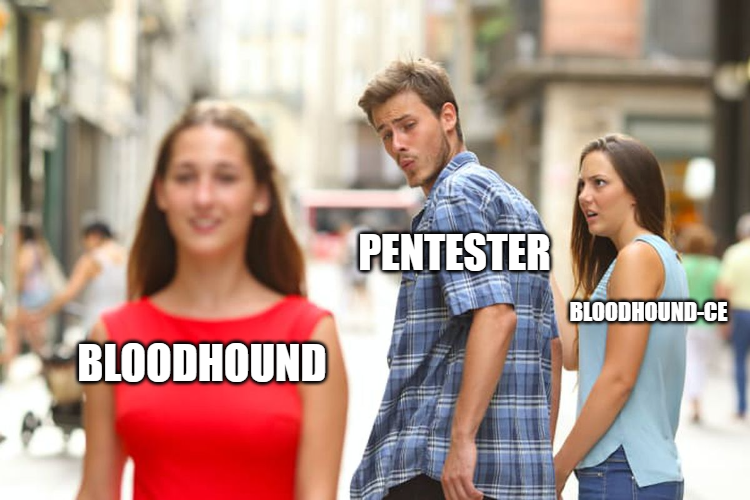

Making BloodHound CE Great Again
TLDR
How to import custom cypher queries into BloodHound Community Edition (BHCE) to make it great again and what ingestor to use to make the most out of your enumeration.
Introduction
If you’re an avid BloodHound user like myself, you’ve most likely heard about the new BloodHound CE (Community Edition) that released in August 2023. This new release got my excited to try it out üòÅ!
But wait…
The reason I wanted to try out the new release was to test out the new features that were implemented. Only to realize that they are missing the most crucial part of a Pentester’s arsenal, ‚≠ê Custom Queries ‚≠ê.
I understand here that the clue is in the name “Custom Queries” and though are not included by default by BloodHound CE. Nonetheless working without custom queries just doesn’t feel right and can lead to want to going back to the classic/legacy BloodHound version.

But fear not! The next sections will demonstrate how to import your favourite custom queries that you’re used to using in a new and fresh UI experience.
Installing BloodHound CE üê∂
My favourite way of installing BloodHound CE is with Docker, you can find the docker-compose.yml file on the official SpecterOps GitHub repository.
wget https://github.com/SpecterOps/BloodHound/blob/main/examples/docker-compose/docker-compose.yml
After downloading it to our machine there are a few configuration changes I like to do before running it.
Avoiding conflicts with Burp Suite
By default the BHCE web interface will be available on http://127.0.0.1:8080/, if you’re familiar with Burp Suite you may see the problem - it’s using the same port…
We can modify the docker-compose.yml file (line 81) so that it’s no longer accessible on port 8080 but rather on port 8081 (you can put whatever port you want):
ports:
- ${BLOODHOUND_HOST:-127.0.0.1}:${BLOODHOUND_PORT:-8081}:8080
To start the container simply run:
docker compose up
After a couple of minutes the web interface should be available at http://127.0.0.1:8081/. Now that we have it up and running, it’s time to import the custom queries.
I like opening up the web interface from my host machine for a smoother experience, that’s why I’m using the IP of my Kali and not 127.0.0.1.
The default username is admin and the password is bloodhoundcommunityedition, you will be prompted to change your password on the first login.
Importing Custom Queries into BloodHound CE ⚡
The custom queries used in classic BloodHound are not compatible with BloodHound CE, you have to convert them to another format before importing them. The script I use below does that for you.
Here are the 2 main resources that I used to go through this process, if you want more information on the differences in the format you can check out the first link.
- https://github.com/WafflesExploits/Bloodhound-query-legacy2ce
- https://medium.com/seercurity-spotlight/make-bloodhound-cool-again-migrating-custom-queries-from-legacy-bloodhound-to-bloodhound-ce-83cffcfe5b64
Finding Custom Queries
You may have your own list of favourite custom queries, if not here are a few good lists:
- ZephrFish custom queries: https://raw.githubusercontent.com/ZephrFish/Bloodhound-CustomQueries/refs/heads/main/customqueries.json
- Exegol custom queries: https://raw.githubusercontent.com/ThePorgs/Exegol-images/3d6d7a41e46acb6898da996c4198971be02e4d77/sources/bloodhound/customqueries.json
Let’s use the ZephrFish ones for the demo.
Start by downloading the custom queries and saving them to a file:
wget https://raw.githubusercontent.com/ZephrFish/Bloodhound-CustomQueries/refs/heads/main/customqueries.json -O zephrfish_legacy_customqueries.json
Fetching the API JWT
We are going to be interacting with the API to upload the custom queries. To be able to do that we need to be authenticated with our JWT. Here’s how you can get it:
- Login to BloodHound CE
- Navigate to the API Explorer window
- Hit the
/api/v2/selfendpoint - Get the JWT from the request (like in the image below)
Python Script
From the repository I linked above download the Python script:
wget https://raw.githubusercontent.com/WafflesExploits/Bloodhound-query-legacy2ce/refs/heads/main/bh_query_legacy2ce.py -o bh_query_legacy2ce.py
Then run it with the the following flags:
--input-file: Custom queries file that you want to upload--jwt-token: JWT from the BHCE API--api-url: URL to your BHCE instance API
python3 bh_query_legacy2ce.py --input-file zephrfish_legacy_customqueries.json --jwt-token 'eyJhb<----------SNIP-------------->1RVby0' --api-url "http://192.168.1.190:8081/api/v2/saved-queries"
⏳ This can take a couple minutes or so depending on how many custom queries you are uploading.
You may get a couple HTTP 400 responses saying “duplicate name for saved query” but it doesn’t matter.
You should see all the ones you have imported in the “Custom Searches” tab üéâ!
Ingestors - Use SharpHound!
I highly recommend using the official BloodHound collectors that are available at /ui/download-collectors on your instance or simply click on the “Download Collectors” button in the cog wheel.
I have had several cases where not all the edges show up in BloodHound (typically canRDP or hasSession) when using Python collectors such as bloodhound-ce.py available in Exegol which I believe is from dirkjanm’s bloodhound-ce branch.
If you have access to the target machine you can try running SharpHound directly on it. However if you don’t have access to a machine you can run it from a local Windows VM. This is a good alternative if you are getting blocked by AV on the target.
runas /user:DOMAIN\USERNAME /netonly cmd.exe
SharpHound.exe -c all